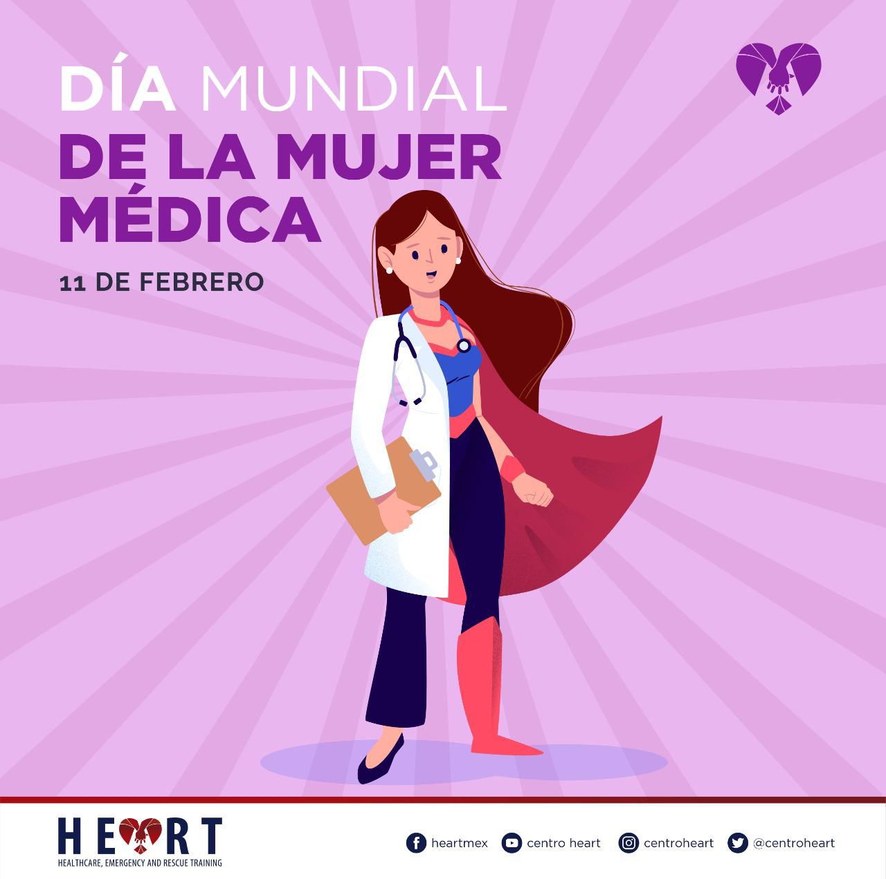
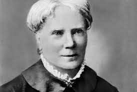

|  |
Dia mundial de la
|
Intriducion (Historia)
El Día Mundial de la Mujer Médica se celebra para reconocer y honrar las contribuciones de las mujeres en el campo de la medicina. La historia de esta celebración se remonta a la lucha constante de las mujeres por la igualdad de
derechos y oportunidades en todos los ámbitos de la sociedad, incluida la medicina.
Históricamente, las mujeres han enfrentado numerosos desafíos para ingresar y avanzar en profesiones médicas. A lo largo de los siglos, han
tenido que superar barreras culturales, discriminación de género y restricciones institucionales para obtener educación y oportunidades profesionales en el campo de la medicina.
El Día Mundial de la Mujer Médica busca
destacar los logros de las mujeres médicas y crear conciencia sobre la importancia de la diversidad de género en el ámbito médico. Reconoce el papel fundamental que desempeñan las mujeres en la atención médica, la investigación, la educación
médica y la promoción de la salud en todo el mundo.
Esta celebración también sirve como un recordatorio de los desafíos continuos que enfrentan las mujeres en la profesión médica y la necesidad de seguir trabajando hacia la
igualdad de género en el campo de la medicina.
De donde viene?
El origen exacto del Día Mundial de la Mujer Médica no está completamente claro, ya que no existe una única organización o evento que lo haya establecido. En su lugar, parece ser una iniciativa que ha surgido gradualmente para reconocer y celebrar el
papel de las mujeres en el campo de la medicina.
La medicina ha sido tradicionalmente dominada por hombres, y las mujeres han enfrentado numerosos obstáculos para ingresar y avanzar en esta profesión
a lo largo de la historia. Sin embargo, a medida que más mujeres han ingresado al campo médico y han logrado importantes avances en la práctica clínica, la investigación y la educación médica, se ha reconocido la necesidad de destacar
y celebrar sus contribuciones.
Aunque no hay una fecha específica establecida para el Día Mundial de la Mujer Médica, muchas organizaciones y comunidades médicas de todo el mundo han comenzado a conmemorar este día en diferentes fechas a lo largo del
año. La elección de la fecha puede variar según la región o la organización, pero el propósito es el mismo: reconocer el papel crucial que desempeñan las mujeres en la medicina y abogar por la igualdad de género en este campo.
|  |
Quien la creo?
No hay una persona o entidad específica que se atribuya la creación del Día Mundial de la Mujer Médica, ya que es una iniciativa que ha surgido de manera colectiva en respuesta a la necesidad de reconocer y celebrar las contribuciones de las mujeres en
el campo de la medicina. |
Primer festejo?
El primer festejo del Día Mundial de la Mujer Médica no está claramente documentado debido a la naturaleza gradual y descentralizada de su creación. No hay una fecha específica ni un evento único que marque el inicio de esta celebración. En cambio, ha
surgido a lo largo del tiempo como una iniciativa para reconocer y honrar las contribuciones de las mujeres en el campo de la medicina.
Las conmemoraciones de este día pueden haber comenzado en diferentes momentos y lugares, con diversas organizaciones médicas, instituciones académicas y grupos de defensa de los derechos de las mujeres tomando la iniciativa
de reconocer a las mujeres en la medicina y abogar por la igualdad de género en este campo.
Aunque el primer festejo del Día Mundial de la Mujer Médica puede no estar documentado de manera precisa, lo importante es reconocer que esta celebración continúa evolucionando como resultado del reconocimiento cada vez
mayor de la importancia de destacar el papel de las mujeres en la medicina y promover la igualdad de género en el ámbito médico.
Cuanto tiempo lleva?
El Día Mundial de la Mujer Médica ha sido una celebración relativamente reciente en comparación con otras conmemoraciones más establecidas. Aunque no hay una fecha exacta de inicio, su reconocimiento y celebración han ganado impulso en las últimas décadas
a medida que ha aumentado la conciencia sobre la importancia de reconocer las contribuciones de las mujeres en la medicina y abogar por la igualdad de género en este campo.
|
Como,Cuando,Donde y Porque?
El Día Mundial de la Mujer Médica es una celebración que ha ido cobrando importancia gradualmente en respuesta a la necesidad de reconocer y honrar las contribuciones de las mujeres en el campo de la medicina, así como abogar por la igualdad de género
en este ámbito. Aquí hay un resumen de cómo, cuándo, dónde y por qué ha surgido esta celebración:
1. ¿Cómo?:
- La celebración del Día Mundial de la Mujer Médica se lleva a cabo mediante una variedad
de actividades, que pueden incluir conferencias, simposios, ceremonias de premios, publicaciones en medios de comunicación y redes sociales, y otras formas de reconocimiento y aprecio hacia las mujeres médicas.
- Las actividades
pueden ser organizadas por instituciones médicas, organizaciones profesionales, grupos de defensa de los derechos de las mujeres, universidades, hospitales y otras entidades relacionadas con la salud.
2. ¿Cuándo?:
- No hay una fecha específica para el Día Mundial de la Mujer Médica, ya que la celebración puede tener lugar en diferentes momentos del año según las organizaciones y comunidades médicas de diferentes regiones.
- Las conmemoraciones pueden coincidir con fechas significativas, como el Día Internacional de la Mujer (8 de marzo) o el Día del Médico (varía según el país), pero también pueden ocurrir en otros momentos del año.
3. ¿Dónde?:
- Las celebraciones del Día Mundial de la Mujer Médica pueden tener lugar en todo el mundo, en diversos entornos médicos y académicos, incluyendo hospitales, universidades, centros de investigación y comunidades
médicas locales.
4. ¿Por qué?:
- El Día Mundial de la Mujer Médica surge de la necesidad de reconocer y honrar las contribuciones de las mujeres en el campo de la medicina, así como de promover la igualdad de género en este ámbito.
- A lo largo de la historia, las mujeres han enfrentado numerosos obstáculos para ingresar y avanzar en la profesión médica, y esta celebración busca destacar sus logros, así como crear conciencia sobre la importancia de la diversidad
de género en la atención médica, la investigación y la educación médica.
- Además, el Día Mundial de la Mujer Médica sirve como un recordatorio de los desafíos continuos que enfrentan las mujeres en la profesión médica y la
necesidad de seguir trabajando hacia la igualdad de género en este campo.
Personas importantes
|
||||||||||||||||
|